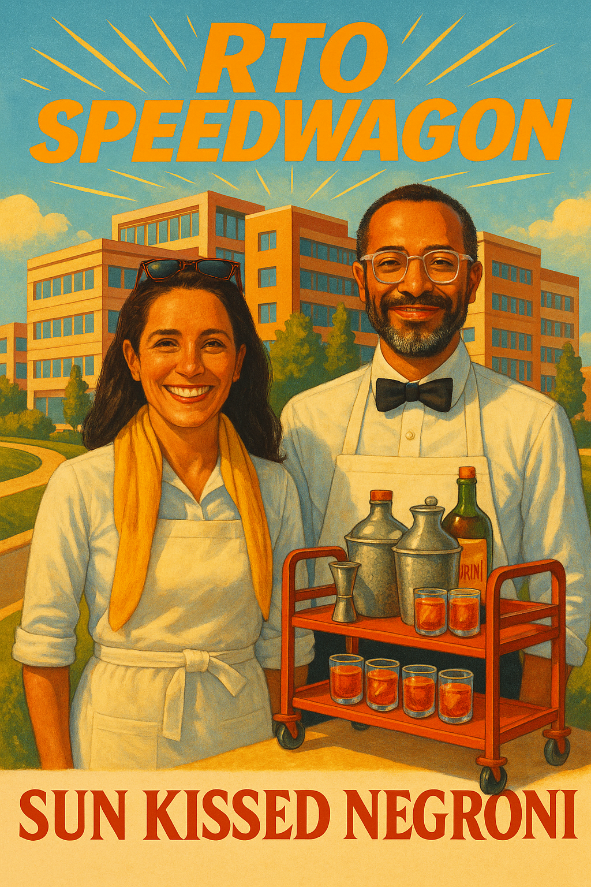

Sun Kissed Negroni

Ingredients
- 1 oz Gin
- 1 oz Sweet Vermouth
- 1 oz Campari
- 1 oz Fresh Orange Juice
- Orange Peel for garnish
Instructions
- Fill a mixing glass with ice.
- Add gin, sweet vermouth, Campari, and fresh orange juice.
- Stir well until chilled.
- Strain into a rocks glass filled with ice.
- Garnish with an orange peel.